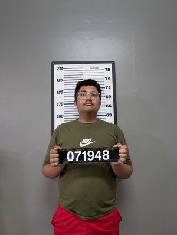

Introduction
Hi, my name is Sankalp Kumar. I am a computer science major and I plan to graduate Spring 2027(fingers crossed I did not mess up something). I enjoy playing basketball and scrolling on reels. My concentration is in data science. I love numbers and being able to combine it with my passion for computers, it's like peanut butter and jelly for me. I don’t know what else you guys need to know about me.
Personal Background
I was born in Pune, India in 2006 and spent 6 years moving around India in all different places. Then when I was 6-7 years old me and my family moved here. I lived in different cities in New Jersey for 10 years. I love it in New Jersey. I enjoy the beach and I love sunsets. Something really meaningful about the day ending and knowing it will happen again.
Professional Background
I had an internship over the summer at a non profit organization designing their website using WordPress.
Academic Background
I am a computer science major with a minor in Mathematics and my concentration is Data Science. I should graduate in Spring 2027(again fingers crossed).
Background in this Course
I am taking this course because I belive that in this day and age it is super important to be able to put yourself out there on the internet and having and being able to create a website is a super useful way to be able to do that
Primary Computer Platform
Windows is my primary computer platform.
Courses I'm Taking
- ITIS3135 – Web-Based Application Design
- LANG 1502- Global Arts/Humanities: Introduction to Global Cultures
- CTCM 2530- Interdisciplinary Critical Thinking and Communication (GEOG)
- ITSC 2181- Introduction to Computer Systems
- ENGL 1512- Local Arts/Humanities: Local Connections in English Studies
Funny/Interesting Story
I peed on a squirrel by accident this one time
Something Else to Share
“Climb a mountain. Fight a mountain lion. Win” -Sankalp Kumar